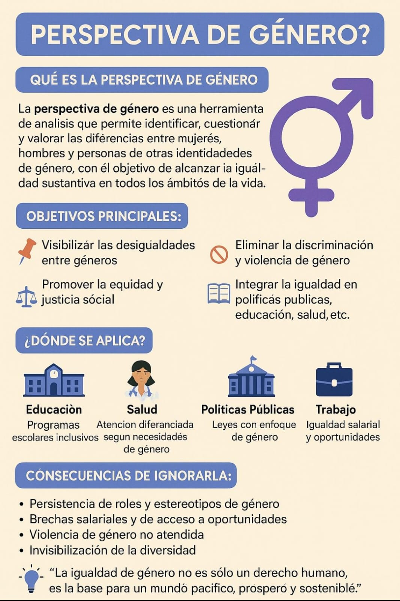

Impacto en las Personas
- Limitación de oportunidades: Las mujeres y personas diversas enfrentan más obstáculos para acceder a educación, trabajo y salud.
- Mayor vulnerabilidad: En situaciones de crisis, son más propensas a sufrir violencia, discriminación y abandono institucional.
- Desigualdad en la toma de decisiones: Suelen estar excluidas de espacios de liderazgo y participación política.
- Afectaciones emocionales y psicológicas: La discriminación constante puede generar baja autoestima, ansiedad y estrés.
- Reproducción de la desigualdad: Las condiciones injustas se transmiten de generación en generación si no se interviene.
INFOGRAFÍA VISUAL
